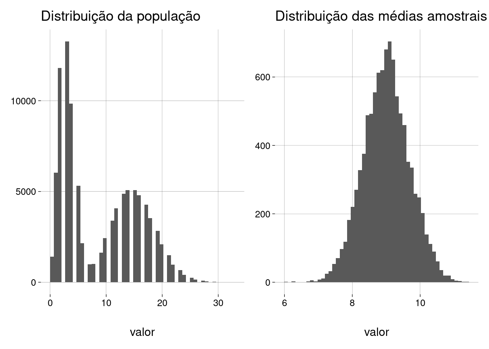

Capítulo 12 Populações não-normais
12.1 Uniforme
-
Dados:
tamanho_populacao <- 1e5 tamanho_amostra <- 100 qtde_amostras <- 1e4 -
Definimos uma população com valores entre \(0\) e \(1\):
uniforme <- runif(tamanho_populacao) -
Vamos retirar muitas amostras desta população e calcular a média de cada amostra.
-
Por exemplo, três amostras e suas respectivas médias:
a1 <- sample(uniforme, tamanho_amostra) a1## [1] 0,869329581 0,209982300 0,496638928 0,499368979 0,186657457 0,344342385 ## [7] 0,116801439 0,189941214 0,772423104 0,778783751 0,093156450 0,047591340 ## [13] 0,899949302 0,226315399 0,552560914 0,525825123 0,029640391 0,561917409 ## [19] 0,559809882 0,859597950 0,804871507 0,146827935 0,058951598 0,280102798 ## [25] 0,285028522 0,519327860 0,433106976 0,333304451 0,476584831 0,954638124 ## [31] 0,780591801 0,101339978 0,314654316 0,990242735 0,844954866 0,967392699 ## [37] 0,405311205 0,171424852 0,213557780 0,055929760 0,622402403 0,135257883 ## [43] 0,290075190 0,202630254 0,594905346 0,901837959 0,236021807 0,759908866 ## [49] 0,113728049 0,299836375 0,761246537 0,939895977 0,143753349 0,440195605 ## [55] 0,819540306 0,645228428 0,774125327 0,687840871 0,914238179 0,447603248 ## [61] 0,193711443 0,703450752 0,631015757 0,495302198 0,729789897 0,950673754 ## [67] 0,571333267 0,932531156 0,021805045 0,393015711 0,560980635 0,593482739 ## [73] 0,435080813 0,404940347 0,863593709 0,845344782 0,248668870 0,745614397 ## [79] 0,500851495 0,714276091 0,571823950 0,664567435 0,483944942 0,451380692 ## [85] 0,974769468 0,182308296 0,618412335 0,784412536 0,429907971 0,524626410 ## [91] 0,839356654 0,009628747 0,982638869 0,460771559 0,447391513 0,701077975 ## [97] 0,419461402 0,022708026 0,071822650 0,268530721mean(a1)## [1] 0,5013405a2 <- sample(uniforme, tamanho_amostra) a2## [1] 0,537127257 0,714157724 0,758129320 0,607783146 0,191654072 0,558148076 ## [7] 0,153129519 0,968886300 0,560464972 0,078813070 0,847052889 0,435220801 ## [13] 0,429718401 0,675571424 0,064212858 0,555145596 0,983912982 0,017477169 ## [19] 0,739916454 0,159267699 0,646231567 0,767586507 0,459140804 0,794855330 ## [25] 0,474957738 0,391580225 0,807984830 0,722808217 0,306649534 0,904464052 ## [31] 0,280691341 0,612927329 0,193282636 0,751671237 0,066252671 0,672371127 ## [37] 0,906193240 0,801269493 0,956015212 0,053552623 0,814222519 0,287908558 ## [43] 0,282878551 0,817179111 0,913337606 0,688490601 0,023302804 0,801148736 ## [49] 0,920262174 0,384750240 0,562533689 0,627294533 0,890178173 0,002385939 ## [55] 0,959085852 0,881101963 0,070349924 0,324673084 0,567032631 0,483372909 ## [61] 0,779220516 0,059368621 0,608695943 0,664166924 0,870103676 0,590112060 ## [67] 0,815081495 0,359841079 0,455165238 0,727277773 0,940016040 0,687818256 ## [73] 0,521265980 0,804189556 0,699634301 0,712968478 0,941152321 0,136708336 ## [79] 0,891254095 0,377979213 0,835787549 0,257772818 0,895569389 0,506121808 ## [85] 0,633335854 0,540881501 0,690710838 0,014458583 0,677491209 0,612267448 ## [91] 0,941688599 0,347645721 0,032504889 0,003996033 0,697600042 0,229145339 ## [97] 0,873270965 0,310203195 0,757048784 0,455766988mean(a2)## [1] 0,5586305a3 <- sample(uniforme, tamanho_amostra) a3## [1] 0,37304029 0,60533056 0,67742812 0,78079738 0,16619780 0,80176380 0,84082814 ## [8] 0,75545430 0,34654105 0,66697578 0,87747161 0,56437873 0,22576855 0,52757542 ## [15] 0,15433794 0,07798435 0,03805315 0,84833770 0,68201463 0,88777552 0,05874217 ## [22] 0,53917469 0,06612466 0,52500553 0,82302671 0,30956999 0,99802753 0,48249254 ## [29] 0,16667167 0,71622572 0,77946385 0,15810985 0,96864575 0,85040020 0,94900362 ## [36] 0,95843226 0,04596898 0,52233577 0,55952978 0,75270363 0,71364222 0,49835529 ## [43] 0,50404666 0,10957463 0,14820706 0,90270814 0,12726159 0,93155567 0,02479344 ## [50] 0,21812856 0,50801571 0,57523798 0,93646581 0,56547527 0,25987711 0,95085959 ## [57] 0,05043098 0,46683682 0,51838925 0,06147510 0,19338896 0,99457904 0,76212994 ## [64] 0,67796055 0,36979235 0,86383912 0,64535102 0,92774725 0,63143062 0,80798963 ## [71] 0,48495490 0,46092112 0,22269385 0,34606527 0,83653930 0,85864444 0,31877899 ## [78] 0,24316776 0,76869982 0,47943708 0,63683160 0,57907865 0,29393781 0,39491851 ## [85] 0,36160928 0,03643693 0,38048180 0,43833383 0,31232725 0,81037264 0,43365283 ## [92] 0,54855347 0,25296780 0,06554264 0,33923681 0,90978174 0,54939680 0,36144745 ## [99] 0,05036426 0,55322867mean(a3)## [1] 0,5140166
-
-
Teremos, então, um conjunto de médias amostrais.
-
No nosso exemplo menor, com \(3\) amostras:
## [1] 0,5013405 0,5586305 0,5140166
-
Qual é a distribuição destas médias amostrais?
-
Qual é a média desta distribuição de médias amostrais?
-
No nosso exemplo menor, com \(3\) amostras:
mean(medias)## [1] 0,5246626
-
-
Qual é o desvio padrão desta distribuição de médias amostrais?
-
No nosso exemplo menor, com \(3\) amostras:
sd(medias)## [1] 0,03009216
-
-
Vamos ver as respostas para o exemplo completo: \(10.000\) amostras de \(100\) elementos cada:
## Média da população = 0,499 ## Desvio padrão da população = 0,288## Warning: `rerun()` was deprecated in purrr 1.0.0. ## ℹ Please use `map()` instead. ## # Previously ## rerun(10000, tirar_amostra(populacao, tamanho_amostra)) ## ## # Now ## map(1:10000, ~ tirar_amostra(populacao, tamanho_amostra)) ## This warning is displayed once every 8 hours. ## Call `lifecycle::last_lifecycle_warnings()` to see where this warning was generated.## Quantidade de amostras = 10000 ## Tamanho da amostra = 100 ## ## Média das médias amostrais = 0,499 ## D.P. das médias amostrais = 0,029
A distribuição da população era uniforme, mas a distribuição das médias amostrais parece normal!
A média da distribuição das médias amostrais é próxima da média populacional.
-
E o desvio padrão das médias amostrais é função do desvio padrão da população. Na verdade, este desvio padrão é
\[ \frac{\sigma}{\sqrt{100}} \]
onde \(\sigma = 0{,}29\) é o desvio padrão da população, e \(100\) é o tamanho de cada amostra.
Terminologia
A distribuição das médias amostrais (o gráfico à direita no exemplo acima) é chamada de distribuição amostral das médias.
O desvio padrão da distribuição amostral é chamado de erro padrão, embora não haja nenhuma idéia de erro aqui.
-
A média de todas as médias amostrais é a média populacional. Por incrível que pareça, fica mais fácil entender isto quando escrevemos em matemática:
\[ E(\overline X) = \mu \]
Chamamos \(\overline X\) de um estimador não-tendencioso (unbiased) de \(\mu\).
12.2 Exponencial
-
Dados:
tamanho_populacao <- 1e5 tamanho_amostra <- 100 qtde_amostras <- 1e4 -
Definimos uma população com \(\lambda = 2\):
exponencial <- rexp(tamanho_populacao, 2) -
Vamos retirar muitas amostras e examinar os resultados:
## Média da população = 0,5 ## Desvio padrão da população = 0,499 ## ## Quantidade de amostras = 10000 ## Tamanho da amostra = 100 ## ## Média das médias amostrais = 0,501 ## D.P. das médias amostrais = 0,05
12.3 Uma mistura
-
Dados:
tamanho_populacao <- 1e5 tamanho_amostra <- 100 qtde_amostras <- 1e4 -
Definimos uma população que é uma mistura de uma binomial com uma Poisson:
-
Vamos retirar muitas amostras e examinar os resultados:
## Média da população = 8,998 ## Desvio padrão da população = 6,667 ## ## Quantidade de amostras = 10000 ## Tamanho da amostra = 100 ## ## Média das médias amostrais = 9,002 ## D.P. das médias amostrais = 0,678 Observe que, embora a população tenha uma distribuição discreta, a distribuição das médias amostrais é sempre contínua.